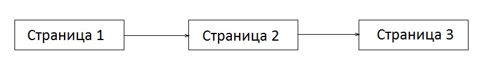
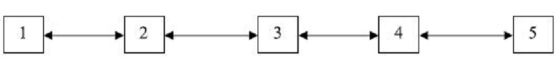
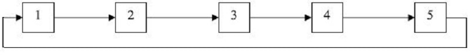
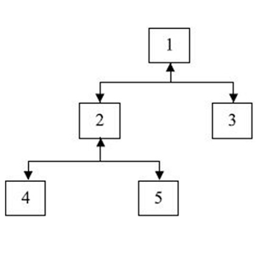
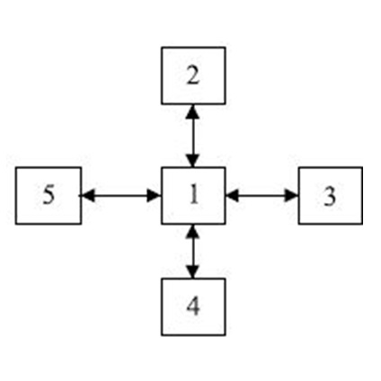
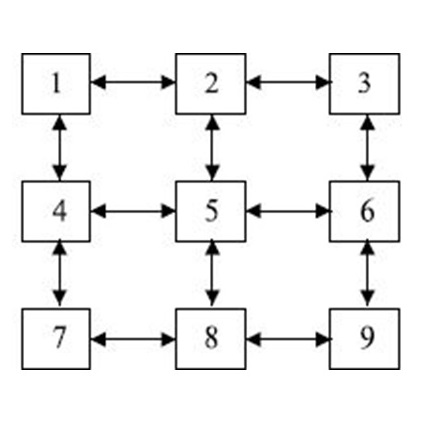
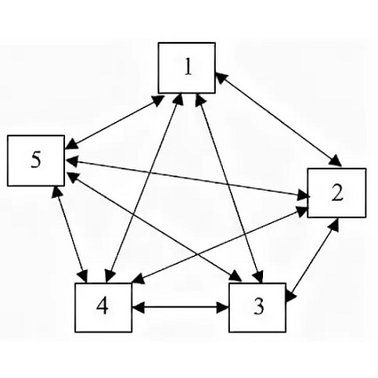
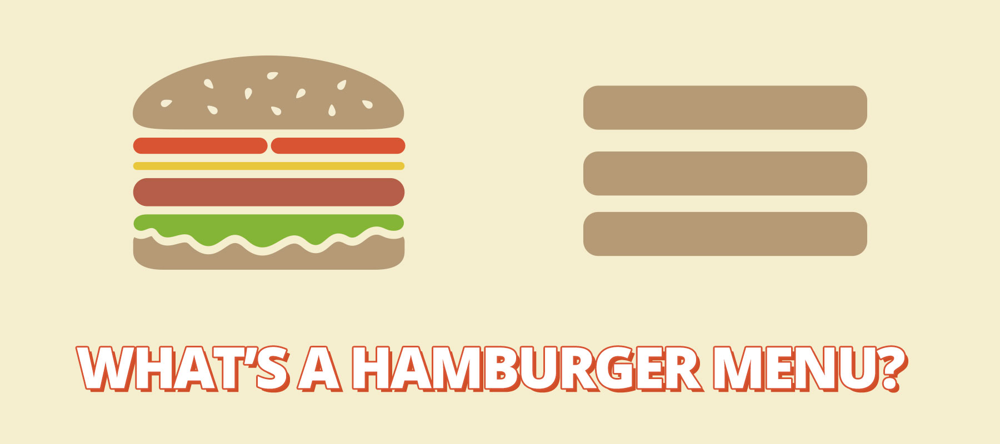
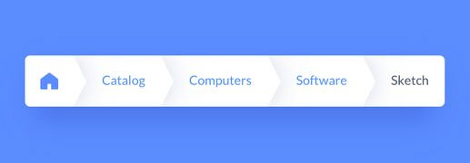

Навигационная система сайта
здесь различные навигационные системы веб‑сайтов и примеры их реализации
Навигационные системы веб-сайтов
Навигация сайта – это возможность перехода между его страницами. Чем проще и понятнее навигационная система, тем лучше для посетителей, поскольку она позволяет находить требуемую информацию и быстро ориентироваться в разделах сайта.
Критерии качественной навигации:
- Простота – все элементы меню или пользовательского интерфейса должны быть хорошо видимыми и интуитивно понятными для любого пользователя. В идеале, чтобы пройти к любой странице или разделу сайта, пользователю должно понадобиться не более 3 кликов.
- Доступность на любой странице сайта – качественно проработанные элементы навигации должны присутствовать на каждой из страниц сайта, чтобы у пользователя была возможность перейти из любого раздела в необходимый.
- Графическое оформление – элементы навигация должна быть контрастны фону и отличаться от основного текста, но при этом гармонировать с общим дизайном ресурса.
От соблюдения данных параметров, при создании сайта во многом зависит его дальнейшая судьба, так как проект с неудобной навигацией не будет привлекать пользователей. Удобная навигация по сайту является частью работы над юзабилити – удобством использования сайта по ряду основных признаков.
По своим функциям система навигации делится на следующие виды:
- Языковая – навигация, отвечающая за языковой интерфейс и отображение контента на выбранном пользователем языке
- Основная – это наиболее важные разделы сайта, как правило меню.
- Глобальная – это те ссылки, которые должны быть видны с любой страницы сайта, например ссылка на главную.
- Рекламная – ссылки для привлечения посетителей на рекламные страницы сайта с расположением товаров и услуг
- Тематическая – навигация по страницам сайта одной определенной тематики (рубрики)
- Текстовая – гиперссылки из текста на странице. С точки зрения юзабилити, они нужны для направления пользователя к упомянутому в тексте материалу. С точки зрения оптимизации – это грамотная перелинковка сайта
- Указательная – по-другому, справочная. Гиперссылка указывает, в какой области сайта сейчас находится посетитель
- Географическая – используется на сайтах, где имеются разделы, посвященные разным странам
По визуальному оформлению выделяют следующие виды навигации:
- Текстовая – совпадает с определением текстовой в функциональном плане. Это, пожалуй, самый древний вид навигации.
- Графическая – сейчас наиболее популярный вид навигации с графическим отображением, применяется для всех видов функциональной навигации.
- HTML-формы – помогают в экономии места с помощью выпадающих или открывающихся элементов.
- Java и Flash технологии – с помощью них можно организовать определенную реакцию на действия при наведении курсора, нажатии кнопок мыши или клавиатуры
В зависимости от тематики, позиционирования сайта, а также от объема информации на нем, выбирается тот или иной вид навигации. В некоторых случаях варианты компонуются при необходимости, но обычно владельцы ограничиваются 1-2 видами из перечисленных. Необходимость использования того или иного типа навигации диктуется в основном удобством для посетителя при поиске нужной информации.
Структура навигации сайта
Структура (карта) сайта позволяет увидеть как связаны друг с другом все старницы веб-ресурса. Карту можно предствить в виде ориентированного графа, верхушки которого - адреса веб-страниц, а дуги - гиперссылки.
Навигация - карта сайта может быть представлена в следующих формах:
- Линейная – все веб-страницы взаимосвязаны друг с другом так, что посещать их можно только в определенном порядке. Движение по сайту предусмотренно только в одну сторону. Возвращаться нельзя. 
- Линейная реверсивная – в данном случае возможно передвижение в обе стороны: возможен переход на следующую и на предыдущую страницу. 
- Кольцевая – линейная структура, где есть возможность перейти с последней страницы на первую. 
- Иерархическая – в данной структуре возможен, например, переход с пятой страницы во вторую и наоброт. Также бывает тупиковая иерархия - реверса нет, в таких системах предпологается, что возврат возможен при помощи соответствующей кнопки браузера. 
- Звездообразная – обязательносуществует главная страница, с которой можно перейти к любой другой. При этом переход с нецентральной страницы на другую возможен только через основную. Чтобы перейти с одной крайней веб-страницы на другую крайнюю, необходимо всего два действия( в некоторых системах действий может потребоваться больше). 
- Матричная – данный тип структуры похож на звездообразную, но в данном случае, чтобы перейти на смежные страницы, требуется меньше шагов. 
- Полносвязная – каждая веб-страница взаимосвязана с остальными страницами на сайте. Такая форма навигации может выглядеть как меню, выполненное в виде отдельного фрейма, который все время присутствует на экране. 
Основные элементы навигации сайта
В сознании большинства людей при мысли о навигации всплывает лишь модель, отображаемая в верхней или правой верхней части каждой страницы. Cуществуют и другие многочисленные элементы, связанные с навигацией. Их задача — поддержание прочной структуры веб-ресурса и его адаптация к поисковикам и простым пользователям. Каждый элемент должен помогать посетителю переходить на желаемую страницу и получать информацию. Составляющие сайта, которые применяются для организации качественной навигации:
-
1. Меню
При разработке навигации основным элементом является меню. Это панель с размещенными на ней ссылками к главным разделам веб-ресурса.
При разработке навигации часто используют меню-гамбургер — еще один особый прием. Чтобы скрыть категории, применяют специальный значок в виде трех горизонтальных черт. Такой показ меню перешел из мобильной разработки. Как правило, его используют на тех веб-ресурсах, где важна экономия места на главном экране.
Меню должно быть оформлено в соответствии с общей стилистикой сайта. Необходимо выделять важные разделы и активную категорию. Чтобы было удобнее воспринимать меню, часто пользуются иконками.
-
2. Логотип и прочие пометки главной страницы
Принято добавлять ссылку к главной странице веб-ресурса на логотип фирмы. Так, пользователь, нажимая на логотип, сразу переходит на главную. Интернет-аудитория уже привыкла к такому приему. Кроме того, на веб-сайтах часто используют иконку дома для перехода на главную страницу. Реже применяют раздел «Главная» в меню.
-
3. Иконки
Чтобы пользователь мог легче воспринимать информацию, на странице размещают не текстовые ссылки, а иконки. Чаще всего можно встретить следующие значки: лупу (поиск), дом (главная страница), сердце (избранное) и корзину (страница оформления заказа). Их разрабатывают в единой стилистике и размещают в шапке сайта.
Кроме того, с помощью иконок обозначают категории товаров в интернет-магазинах. Нажимая на значок, пользователь оказывается в соответствующей категории или карточке товара. Бывает, что иконки размещают в меню веб-ресурса.
-
4. Текстовые ссылки
В навигации сайта присутствует еще один элемент — ссылки на страницы, которые встроены в текст.
Существуют некоторые правила оформления гиперссылок:
- ссылки должны быть заметны в тексте. Чаще всего их выделяют цветом и подчеркивают;
- ссылки в активном состоянии, при наведении или нажатии должны быть разных цветов;
- если ссылка предусмотрена для действия, неожиданного для пользователя, человек должен быть об этом оповещен;
- ссылку лучше оформлять не как прямой URL, а скрывать ее в текстовом контенте, понятном пользователю.
-
5. Футер
Футером, или подвалом, называют область в самом конце веб-страницы с размещенными на ней ссылками на разделы, контактами компании, а также ссылками на документацию и правила пользования сайтом. Футер помогает найти любой раздел на веб-ресурсе.

-
6. «Хлебные крошки»
Так называют вспомогательную навигацию сайта для пользователей, представляющую собой путь от главной страницы до текущего раздела. Все элементы данной строки, за исключением текущей страницы, являются кликабельными и ведут на соответствующий раздел ресурса. Нередко текущую страницу опускают и остаются лишь предшествующие разделы. Такой прием дает пользователю возможность понять, где он сейчас и как вернуться назад.
 -
7. Кнопка для возврата
При скроллинге появляется сложность: как пользователю скорее вернуться в начало страницы и не прокручивать ее по новой? Для устранения этой проблемы предусматривают кнопки возврата. Они выглядят как стрелки в положении «вверх».